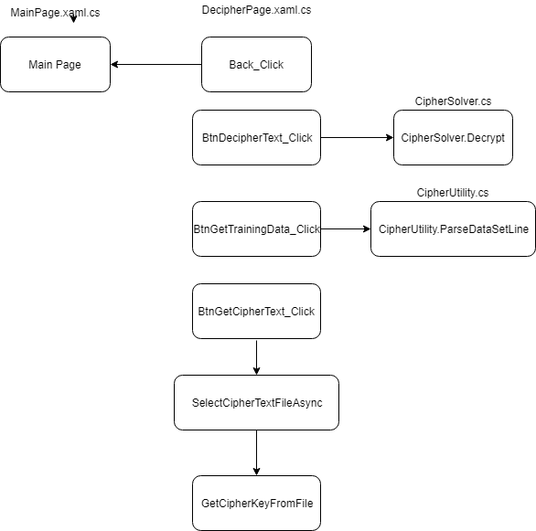
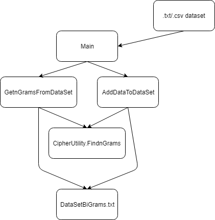
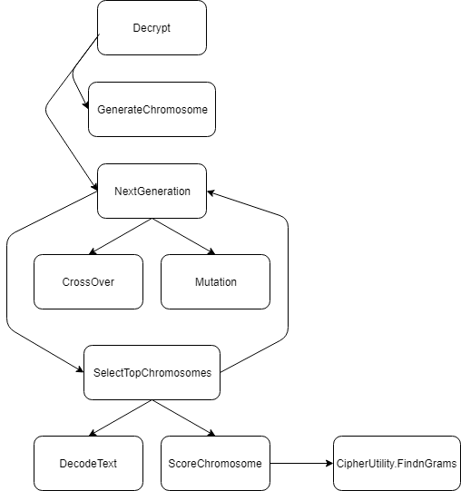
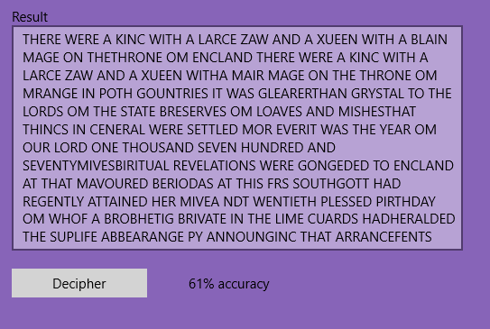
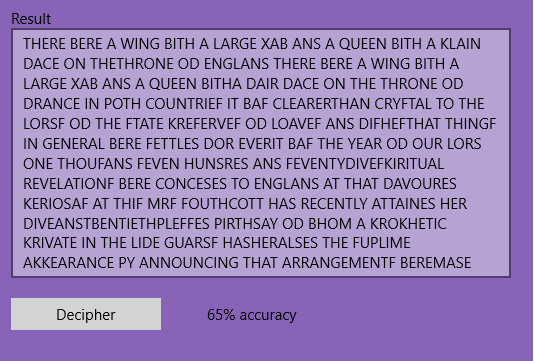
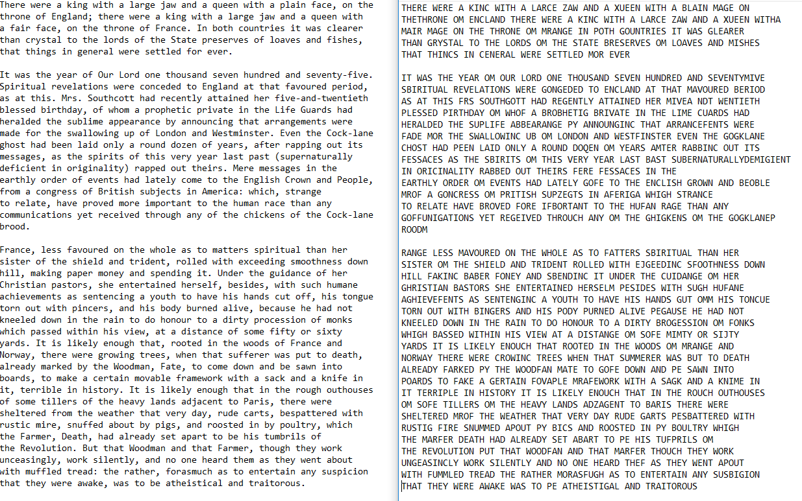

I chose this topic for my Senior Project a number of reasons. Ciphers and decryption have always fascinated me for as long as I remember. In addition, I wanted to learn something new. The technologies and algorithm chosen for this project were the perfect blend of challenge and familiarity to allow a comfortable transition to the project while improving my skills as a software designer and programmer.
My plan for the project from the beginning varied from the final result. I made some changes to make the project flow better and also to steer away from some potentially unnecessary challenges. The original break down is as follows:
When I actually started the project and realized that some things were easier and some things would be much more complicated, I realized I should shift my priorities around in order to accomplish as many useful features as possible for the application. Here is what I changed, and why I changed it.
Change: decided to write all of my code as C# projects.
Reason: Writing the .dll's in C++ was an unnecessary challenge. Despite being comfortable and familiar with the language, some things are just drastically trivial in C# such as exporting as a dll, many data structures and their functionality, as well as some object-oriented features as well.
Secondly, I found writing test scripts in Python to be far less enjoyable in the Windows environment than in a Unix environment. I also realized that many of the features that I was beginning to write in Python would be nice quality-of-life features to have implemented in the actual application itself. Despite Python being much easier to program with, having the features included in the finished project was much more satisfying at the end.
Change: Chose to implement a solution to the cipher in one manner.
Reason: I originally wanted to compare my genetic algorithm to something to prove (or disprove) its effectiveness. Genetic algorithms are great for solving NP problems, but are they the fastest? That is what I wanted to determine.
After realizing that implementing the genetic algorithm was going to be much trickier than anticipated, I made the choice to scale the project back slightly in order to have a fully operational application.
The documentation that I found online on the topic of genetic algorithms in relation to this specific topic seemed to be very incomplete. Many sources I found lacked thorough explanation for key parts of the algorithm, and thus forced me to crowd source the knowledge from numerous sources in order to comprehend all of the complexities. I plan on giving as detailed as an explanation as I can give based on all of the information that I have accumulated.
Change: Included cipher generation as an additional feature to the application.
Reason: This may seem like an obvious feature to have when creating a tool like this, however I did not initially plan on having a feature which allowed the user to randomly create their own ciphers. After writing almost all of the code for this feature initially in Python, it made more sense to just incorporate it into the final project and allow the application to complete both aspects of the encryption.
While I have had the opportunity to worth with C# in the past, it was not in this capacity. My experience was with creating a web applicaton. Being able to use C# for a somewhat complex algorithm as well as UWP really cemented my knowledge and comfort in the language. UWP also uses XAML as their formatting language which was considerably simple to use and to create an aesthetic application. From my experience it was far easier than formatting a design on Android or even HTML.
In addition to UWP, I learned a great deal about genetic algorithms. I had barely ever dabbled in Machine Learning before, so having the opportunity to go all in and write an algorithm such as this ended up being a lot to take on. By the end of it, however, I feel confident in my knowledge enough that I could approach using a genetic algorithm for other applications as well.
In Progress
For this User's Manual, I will give a broad explanation of each feature and how to properly use the aforementioned feature. As features are added, this section will updated accordingly.

1. Generate a single-letter substitution cipher key: When the application loads there are two buttons. Click on the button that reads "Create a Cipher."
A. Manually enter plain text to be ciphered: If you would like to manually type or copy-paste text in to this field, be my guest. Note: Punctuation and capitalization are ignored during enryption.
B. Translation appears here: The result of your encrypted text appears in this text box.
C. Generate button: Click here to generate a newly randomized cipher key. Feel free to keep clicking til you get one you like!
D. Load plain text from a file: If you would like to enter alot of text into the field by loading the text from a saved file you can click this button in order to choose your saved file. Note that .txt files must be coded to utf-8 and not ANSI. If you attempt to load an ANSI saved file you will receive an error message in the text box (Which you can encrypt if you would like! Fun right?)
E. Save the encrypted text to a file: Once you have successfully encrypted your plain text you can now save it to a file to reference later or to save to send your manifesto to the police or something.
F. Translate text using the generated cipher key: Click this button to see the text entered above be encryted into cipher text using the cipher key that you generated. If you did not generate a cipher key prior to clicking this button you will receive an error message that tells you to generate a key first.
Step-by-Step: To translate plain text to cipher text follow these steps.
2. Decipher existing encrypted text: When the application loads there are two buttons. Click on the button that reads "Decipher Text."

A. Cipher text input field Manually enter or copy-paste cipher text here to be decrypted
B. Results text output field The result of the algorithm processing your cipher text will be output here.
C. Decipher button Press this button when you are ready to run the algorithm. Note that the time for it to run may take about a minute depending on the size of the text that has been entered into the input field.
D. Load Text select a file containing the cipher text. If you generated the file using this application, then it will also measure the accuracy of the solution against the cipher key stored in the file.
E. Load Training Set Do to odd UWP file access permissions, the user must load their own training data. I have provided one in the contents of the project, however should the user provide their own, then they must follow the same format as the existing one.
Step-By-Step: To run the decryption algorithm follow these steps.
The entirety of the solution has been broken up into 5 main parts. Each file contains one class, so I will explain the primary functionality of each file and each project that is a part of the entire solution.
Terminology
Before I start I want to add a sort-of glossary that explains the less-known terms that I will be using. Figuring this out during my research in the topic made understanding the explanations a lot more challenging.
CipherBreakerUWP
This is the main entry point to the application. Every other part of the entire solution is referenced from here in order to solve a problem and display it on the screen.
MainPage.xaml / MainPage.xaml.cs : this is the homepage for the application. From here we can access the other pages and that's it.
NavigateToCipherPage_Click - On click event that allows the user to navigate to the Cipher page.
NavigateToDecipherPage_Click - On click event that allows the user to navigate to the Decipher page.

CipherPage.xaml / CipherPage.xaml.cs : this is the page where the creation of a cipher happens. This page contains a number of RichEditBoxes, Buttons, and TextBlocks. Each of the components is hooked up to specific functionality in the .cs page which allows us to call the CipherMaker library.
CipherPage - initializes m_currentCipher to an empty dictionary, and sets CipherText field to Read-Only
Back_Click - navigates user back to Main Page
CreateCipherBtn_Click - calls CipherMaker method CreateSubCipher to create a new cipher key and displays it in a textblock.
btnTranslate_Click - Verifies that a cipher ket has been generated then reads text from textbox. Passes text to CipherMaker.EncodeText which encodes the entered text. Then prints the result to the screen.
btnLoadText_Click - allows the user to specify a file to be translated into cipher text.
SelectPlainTextFileAsync - gets called by btnLoadText, handles the FilePicker and verification of plain text file to be translated.
btnSaveCipherText_Click - saves the cipher text and cipher key to a file using the FileSavePicker mechanism
KeyToString - converts the generated cipher key into string format to be saved in the file.

DecipherPage.xaml / DecipherPage.xaml.cs : this page is where the user can load or enter cipher text and call the genetic algorithm (called from CipherSolver library) in order to decipher the text with as much accuracy as possible.
DecipherPage - sets RichEditBox to Read-Only, initializes m_trainingData and m_cipherKey
Back_Click - navigates user back to Main Page.
BtnDecipherText_Click - reads in cipher text and calls CipherSolver.Decrypt to do the heavy lifting. If the method returns us an accuracy, we print it to the screen as well as the solution.
BtnGetCipherText_Click - allows user to load cipher text from a file
BtnGetTrainingData_Click - allows user to specify desired training data
SelectTrainingDataAsync - handles FilePicker usage and allows user to select file from which they want their training data and then parses the data and stores it in a Dictionary
SelectCipherTextFileAsync - handles FilePicker usage and allows user to select a file from which contains the cipher text and possibly a cipher key
GetCipherKeyFromFile - parses the cipher key from the selected file if it contains one in the format set by the CipherPage saver
CipherMaker
This class handles the creation of cipher keys and the translation of plain text to cipher text.
Notable data structures:
Dictionary<char, char> - this data structure is used throughout the entirety of the project as a cipher key. It is a mapping of the alphabet A-Z to random unique characters A-Z. Somtimes a letter will map to itself, but most likely it will map to a completely random letter.
Methods:
CreateSubCipher - handles the creation of the cipher key. Create list of all characters in the alphabet and randomly assign them to characters A-Z while crossing each one off as they are assigned.
EncodeText - converts plain text into cipher text by using a specified cipher key.
CleanString - ensures that the plain text passed to us contains only letters and spaces. We will not be decoding any other ASCI values.

CipherTrainingData
This class acts as a separate entity from the rest of the project. Its purpose is to read in large amounts of text data and parse it into bi-grams. It is dynamic enough that you can specify a file and it will read through it and update the data txt files that already exist and increment the count of existing bi-grams and add them if they do not exist.
This class only has two methods. One initializes the file with data from a file and the other reads in our existing parsed dataset, adds data to it, and then saves back into the file.
The datasets that I found free online were the script to the series The Office, the script to Seinfeld, and the entirety of the book A Tale of Two Cities. I initially just started out with The Office, but when I realized that the accuracy of my algorithm was low I considered that I might be lacking sufficient training data. I then added Seinfeld to the training data and also found an algorithm that only used A Tale of Two Cities with great results, so I decided to add that as well.
Increasing the amount of data in my training data sets did not increase the accuracy by a significant amount, therefore I was able to rule that out as being a major problem in my algorithm. Especially since another person's research yielded accurate results using only one of my three data sets.
CipherSolver
This class has one function and that is to read cipher text and iterate towards a potential solution. Here I will explain the algorithm and the design for this feature.
Notable Data Structures
List<Dictionary<string, int>> - this is used for our population. Each dictionary is a chromosome and the population is the list of chromosomes.
Dictionary<string, int> - This dictionary is used for storing n-grams and their frequencies. It is used when reading the data from out data set as well as after we parse the bi-grams out of the decoded text to score them.
struct CipherStats - structure used for sending multiple variables back to the UWP application after being called. We send the decoded text as well as the percentage of accuracy that our algorithm achieved.
HashSet<chart> - used for taking the top characters of each dataset to initialize chromosomes for our beginning population. I can simply keep adding characters to the HashSet and stop once it has hit 10 since it will ignore duplicate values.
Initial Population Creation
After obtaining sufficient training data, the first step in this process is creating an initial population. Some algorithms that I found online used completely random initializations and some used a very calculated determination using frequencies of different n-grams.
I initially used a complete randomization of my chromosomes to add to the population. The idea being that any completely wrong solutions would quickly be removed from the population after the first scoring. What I later moved to after seeing low accuracy scores is slightly more sophisticated.
The method that I created, which I believe to be a reasonable medium and is in the final version of the project,takes the first 10 unique characters from the top bi-grams from the cipher text and randomly assigns them to the top first 10 unique characters from the top bi-grams from our training data. When done by hand, the top 10 characters from both had about 8 out of 10 in common with one another. Creating the chromosomes with those top 10 matching up creates a good chance that at least some of the chromosomes will have a few correct assignments right away. The remaining 16 characters are randomly assigned to one another.
According to the research done by Jason Brownbridge from the University of Cape Town, a population size of 500 was enough to converge to a solution. In addition, I also saw more accurate results while using the same population, although the using a larger population such as this really slows down the speed of the program.
Scoring/Selection
At this point we have now begun the genetic algorithm and we need to select the top individual chromosomes that will continue to the next generation. From what I found, the scoring algorithms used are somewhat similar across the board, so I don't believe improve the accuracy of the algorithm by a significant amount by altering this part.
At the end of each generation we choose the most "fit" individuals to continue to the next iteration. We do this by finding the number of occurances of bi-grams in the cipher text after decoding it with each chromosome. If a bi-gram from the decoded cipher text exists in the training data we multiply both frequences together to create a score. A more common bi-gram will yield a higher score and is more likely to be the correct option. Once we have scored each chromosome we remove the bottom 85% of chromosomes and use the remaining 15% to repopulate in place of those that we removed.
Repopulation/Crossover
During repopulation we use a strategy called crossover to take parts of our most fit chromosomes and create new chromosomes base off of them.
The idea of crossover in our application involves taking two parents and passing some of their chracter mappings down in order to produce a child. The implementation of crossover that I used is fairly simple. I take two random key-value pairs from ParentX and add them to the child. I then fill the rest of the child's data in with the remaining keys from ParentY.
Unfortunately this is likely to cause a problem where two keys may have the same value. I personally solved this problem by using mutation in the next step. Some other algorithms carefully chose the two parents with the criteria that this type of occurance would not happen.
Mutation
Mutation is a tool to change new chromosomes in a random way. If the top population is far from the correct solution, then mutation gets us towards the correct solution. It is not a complete rewrite of a chromosome but it is a change or two that might yield higher scoring results.
As explained before, during crossover we run into an issue in which multiple keys point to the same character. If that is allowed to stay in a chromosome, then we have no chance at reaching a final solution. To correct that, I chose to mutate any duplicate values by randomly replacing them with any characters that are unrepresented in the values of the chromosome. This accomplishes both the task of incorporating an element of randomness to the population, and also removes any duplicate values.
If a chromosome does not have any duplicate values, then the algorithm chooses two random letter mappings and swaps their values in order to mix things up. Increasing the number of mutations from 1 per chromosome to 3 per chromosome also made a noticeable difference in the accuracy.
By this stage, the new child has received parts of the chromosome of two parents and has also been mutated. We now add them to the population to once again be scored and compared among the most fit individuals. Should a mutation be beneficial to the chromosome we will see its score increase and remain in the population through the next iteration.
Results
As we iterate towards a solution the scores of the chromosomes will gradually increase as we introduce more fit individuals to the population. We record the highest score and when the highest score stops increasing we count how many iterations that the score does not increase. In this algorithm, if the score does not increase for 10 generations, then we take the most fit individual of the population and claim that as our best solution.
Below are two of my more accurate results.
 Comparison of original text to decoded text from result with 61% accuracy
CipherUtility
The primary purpose of this class is to support the other libraries by removing functions that are needed across multiple libraries. This way, no code is written twice and can simply be called from this helper class. Since there is no broad overview of the functionality of this class, I will give a break down of each method.
GetTrainingBiGrams() - This method loads all of the bi-grams from our dataset and stores them into a dictionary for future use.
ParseDataSetLine() - This method is used for parsing the text loaded from the training bi-grams txt file.
FindnGrams() - This method accepts a string of text and parses it into all of the possible n-grams and counts the occurances of each one. You can specify n and have it return either bi-grams/tri-grams/etc. Returns a dictionary of n-grams and their respective frequencies.
IsEnglishLetter() - determining if a character is a letter a-z or A-Z is important when reading unkown txt files to ensure that the data we are reading in is valid for us to use. Also for determining when to start reading a word and when to stop.
Challenges
I faced a number of challenges while working on this project. Most of the larger changes that I made due to challenges are listed at the beginning, however here is a compilation of some of the smaller design decisions that I made along the way.
Accuracy of Genetic Algorithm - This part has proven the most challenging part of the project. And expectedly so. Despite following the steps of multiple algorithms of my sources, I can not quite seem to get my algorithm to converge to an accurate solution. I did manage to improve my accuracy on my own by improving upon some of the steps that I found.
For example, one algorithm that was able to converge to a solution with 98% accuracy used a completely random initial chromosome populaton. While I was not able to achieve 98% accuracy, I was able to improve upon my ~20% accuracy to a consistent 30+% accuracy.
In addition, when using the crossover/mutation method from another algorithm I ran into the problem where chromosomes would have duplicate values which makes for an even less accurate result. I was able to solve this by using a similar crossover method, but by also mutating any duplicate values to ensure that they are unique. This allowed my accuracy to occasionally reach the 40+% zone. Also, playing with the number of mutations based on the number of iterations since the last score increase helped. With this method, I was able to break both 50% and 60% accuracy ratings.
I believe that with more fine tuning I would be able to fill in any holes with my algorithm to converge to a solution. I have some more ideas to fine tune that I plan on outlining in my Conclusion/Moving Forward section.